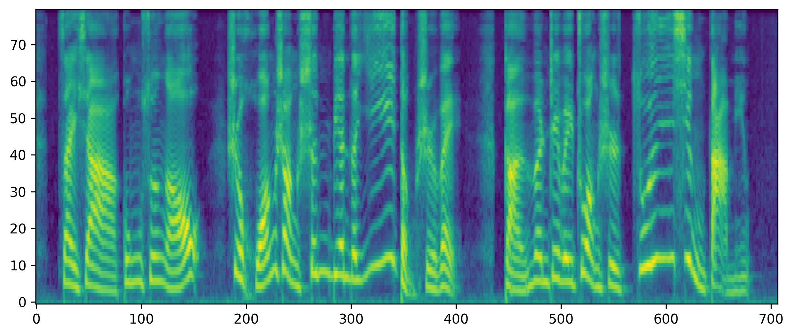
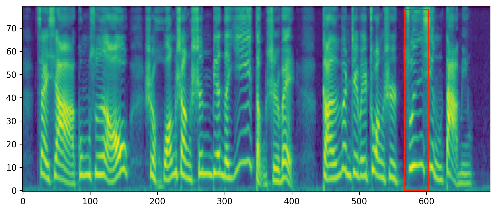
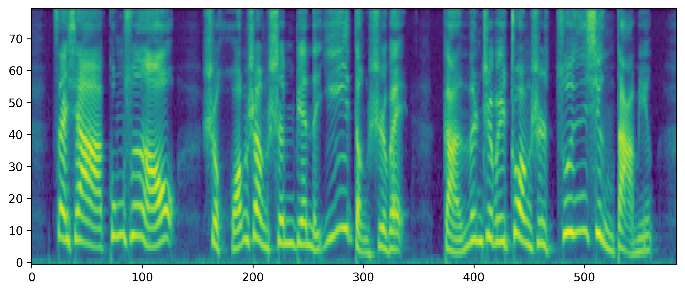
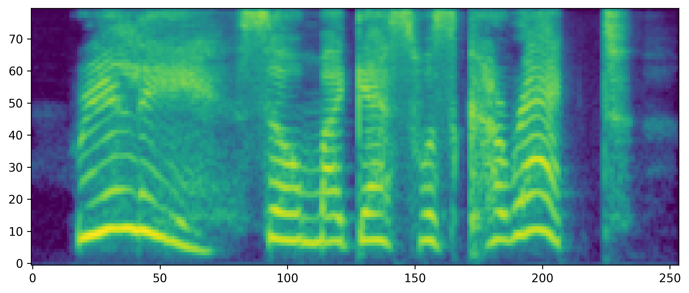
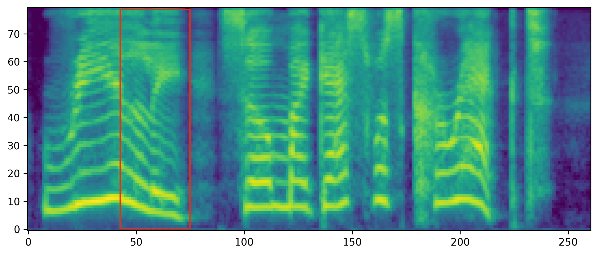
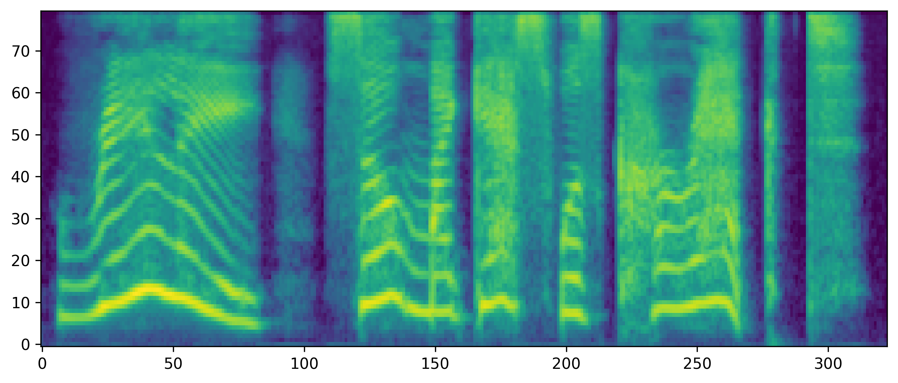

FlexSpeech: Towards Stable, Controllable and Expressive Text-to-Speech
1. Abstract
Current speech generation research can be categorized into two primary classes: non-autoregressive (NAR) and autoregressive (AR). The fundamental distinction between these approaches lies in the duration prediction strategy employed for predictable-length sequences. The NAR methods ensure stability in speech generation by explicitly and independently modeling the duration of each phonetic unit. Conversely, AR methods employ an autoregressive paradigm to predict the compressed speech token by implicitly modeling duration with Markov properties. Although this approach improves prosody, it does not provide the structural guarantees necessary for stability. To simultaneously address the issues of stability and naturalness in speech generation, we propose FlexSpeech, a stable, controllable, and expressive TTS model. The motivation behind FlexSpeech is to incorporate Markov dependencies and preference optimization directly on the duration predictor to boost its naturalness while maintaining explicit modeling of the phonetic units to ensure stability. Specifically, we decompose the speech generation task into two components: an AR duration predictor and a NAR acoustic model. The acoustic model is trained on a substantial amount of data to learn to render audio more stably, given reference audio prosody and phone durations. The duration predictor is optimized in a lightweight manner for different stylistic variations, thereby enabling rapid style transfer while maintaining a decoupled relationship with the specified speaker timbre. Experimental results demonstrate that our approach achieves SOTA stability and naturalness in zero-shot TTS. More importantly, when transferring to a specific stylistic domain, we can accomplish lightweight optimization of the duration module solely with about 100 data samples, without the need to adjust the acoustic model, thereby enabling rapid and stable style transfer.
2. Comparison with Other Methods
We compared our models with previous state-of-the-art (SOTA) zero-shot TTS systems. Besides better speech quality, FlexSpeech generates more natural speech, better matching the speech prosody in the prompt.
| Text | Prompt | FlexSpeech (Proposed) | FireRedTTS | MaskGCT | CosyVoice | F5-TTS |
| In her country she is also well known for her popularization activities. | ||||||
| He darted through the trees and paused a tall man strongly but slimly made. | ||||||
| The last lineage diversified rapidly, and became the ancestor of most Australian "Atriplex" species. | ||||||
| Underwater demolition specialists may still be referred to as underwater demolition teams. | ||||||
| They then applied the defined solarisation curve to real time video images. | ||||||
| Toward the end of the afternoon, they came upon a Coptic monastery. | ||||||
| When it comes to the crunch, our company will become insolvent. | ||||||
| It presents weapons, vehicles and uniforms, as well as abundant documentation history. | ||||||
| The results of the test were inconclusive, and it has not been repeated. | ||||||
| As research continued, the protective effect of fluoride against dental decay was demonstrated. | ||||||
| Today, the old observatory is no longer used for research. | ||||||
| Oh mademoiselle, why have i not a devoted sister or a true friend such as yourself ? | ||||||
| Well, you shouldn't have any trouble then. | ||||||
| This subsequently was renamed "The Magazine". | ||||||
| 网购花瓶写着“ins风小众设计”，到货发现是奶奶腌酸菜的土陶罐。 | ||||||
| 拖地时发现沙发底藏着失踪三年的耳环！旁边还有猫主子的乳牙，简直考古现场。 | ||||||
| 哇！刚刚试穿了那件一直心仪的衣服，不仅合适，还特别好看！ | ||||||
| 为了抢演唱会门票，定十个闹钟，结果紧张到失眠，刷票时手抖买成儿童场，现在要装萝莉混进场。 | ||||||
| 今天真的好累，晚上一回家就想好好休息。累的时候开心地睡上一觉也是一种小小的幸福。 | ||||||
| 因为我们悄悄走过，所以当时那些惊涛骇浪都烟消云散。 | ||||||
| 突然，身边一阵笑声。我看着他们意气风发地挺直了胸膛，甩了甩那稍显肉感的双臂，轻笑道，我身上的肉是为了掩饰我爆棚的魅力，否则，岂不吓坏了你们呢？ | ||||||
| 最近总想着去郊外野餐，享受一下自然的宁静。坐在草地上吃点美食，感觉生活简单而美好。 | ||||||
| 最近在学习新的食谱，尝试多做些不同的菜肴。虽然有难度，但希望能在烹饪中找到乐趣。 | ||||||
| 面试的公司刚发邮件确认时间，一下子有点紧张，要赶紧准备好材料。 | ||||||
| 上午工作特别忙，密集的会议和文件处理，不过下午我们可以抽点时间聊聊心事，放松一下。 | ||||||
| 他的家里，挤满了要追求他太太潘妮洛普的无赖们，白吃白喝混着。 | ||||||
| 最近工作压力挺大的，真希望能够早点放假，好好休息一下。这样可以有更多时间做自己喜欢的事情。 |
3. Rapid Style Transfer
Despite utilizing only a few dozen win-lose data pairs for direct preference optimization, it has been proven to significantly enhance the stability and naturalness of FlexSpeech. Thanks to the high controllability of our framework, we can rapidly transfer any specific style with a few dozen data pairs onto speakers. We conduct experiments on the open-source StoryTTS dataset, which is a highly expressive storytelling TTS dataset from the recording of a Mandarin storytelling show. We achieved effortlessly transferring this style to unseen speakers using just 100 data pairs.
| Text | Style Prompt | Zero-shot Speaker | FlexSpeech (Proposed) |
| 既然是东方大哥的故旧，那就请他坐下来谈谈吧。 | |||
| 你亲自下手把灌夫毒死了，是为百姓除一大害啊。 | |||
| 许贾心说，你的女儿要去做小老婆，我许甲有什么舍不得的？ | |||
| 公主传出话来，不许我去见他，那你说我怎么敢轻易迈进公主的卧室呢？ | |||
| 对呀，东方爱卿，你解释的不错呀。 | |||
| 武帝没看出李延年的变化，手捋胡须也是哈哈大笑。 | |||
| 灌爷家的事，你小子也敢管？ | |||
| 要不然你在这替我坚守大营，我把去病给拽回来。 | |||
| 大枪在手中一捋。这些兵丁一看，这小子拿出枪来，我们也拿兵刃吧。每个人全都拿起了兵刃。霍去病武艺高强，本领出众，艺高人胆大，一会儿的功夫，一枪一个，一枪一个，就连挑了五个兵丁，把这五个大个的兵全都挑到马下了。 | |||
| 狄山一听皇上要传旨，他跪着呢，就跪着往前爬，爬到皇上面前，“皇上啊请您开恩哪！皇上啊！臣狄山可以献出女儿，可是您要知道臣是个读书之人，手无缚鸡之力，再说身体也不好常年多病啊。 |
5. Duration Control
We use a case study to demonstrate FlexSpeech's fine-grained duration control capability. We perturb one of the phonemes by a coefficient of 1.25, resulting in audio output with greater or smaller duration for that specific phoneme which is highlighted by the red box. And we apply the coefficient to the durations of all phonemes in the sentence.
| FlexSpeech (Proposed) | Phoneme-level Duration Control (1.25 times faster for the phoneme in the red box) | Sentence-level Duration Control (1.25 times faster) |
|
 |
 |
 |
| FlexSpeech (Proposed) | Phoneme-level Duration Control (1.25 times slower for the phoneme in the red box) | Sentence-level Duration Control (1.25 times slower) |
|
 |
 |
 |